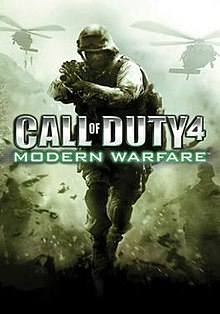

Call of Duty 4: Modern Warfare is a first-person shooter developed by Infinity Ward and published by Activision. An installment in the Call of Duty series, it was released in November 2007 for the PlayStation 3, Xbox 360, and Microsoft Windows. The game breaks away from the World War II setting of previous entries in the series and is instead set in modern times. Developed for over two years, the game uses a proprietary game engine.
The story takes place in the year 2011, where a radical leader has executed the president of an unnamed country in the Middle East, and an ultranationalist movement ignites a civil war in Russia. The conflicts are seen from the perspectives of a U.S. Force Reconnaissance Marine and a British SAS commando, and are set in various locales, such as the United Kingdom, the Middle East, Azerbaijan, Russia, and Ukraine. The multiplayer portion of the game features various game modes, and contains a leveling system that allows the player to unlock additional weapons, weapon attachments, and camouflage schemes as they advance.

Overwatch is a team-based multiplayer first-person shooter video game developed and published by Blizzard Entertainment, which released on May 24, 2016 for PlayStation 4, Xbox One, and Windows. Described as a "hero shooter", Overwatch assigns players into two teams of six, with each player selecting from a roster of over 20 characters, known as "heroes", each with a unique style of play whose roles are divided into three general categories that fit their role. Players on a team work together to secure and defend control points on a map or escort a payload across the map in a limited amount of time. Players gain cosmetic rewards that do not affect gameplay, such as character skins and victory poses, as they play the game. The game was initially launched with casual play, with a competitive ranked mode, various 'arcade' game modes, and a player-customizable server browser subsequently included following its release. Additionally, Blizzard has developed and added new characters, maps, and game modes post-release, while stating that all Overwatch updates will remain free, with the only additional cost to players being microtransactions to earn additional cosmetic rewards.

Dota 2 is a multiplayer online battle arena (MOBA) video game developed and published by Valve Corporation. The game is a sequel to Defense of the Ancients (DotA), which was a community-created mod for Blizzard Entertainment's Warcraft III: Reign of Chaos and its expansion pack, The Frozen Throne. Dota 2 is played in matches between two teams of five players, with each team occupying and defending their own separate base on the map. Each of the ten players independently controls a powerful character, known as a "hero", who all have unique abilities and differing styles of play. During a match, players collect experience points and items for their heroes to successfully defeat the opposing team's heroes in player versus player combat. A team wins by being the first to destroy a large structure located in the opposing team's base, called the "Ancient".

In League of Legends, players assume the role of an unseen "summoner" that controls a "champion" with unique abilities and battle against a team of other players or computer-controlled champions. The goal is usually to destroy the opposing team's "nexus", a structure that lies at the heart of a base protected by defensive structures, although other distinct game modes exist as well. Each League of Legends match is discrete, with all champions starting off fairly weak but increasing in strength by accumulating items and experience over the course of the game.[2] The champions and setting blend a variety of elements, including high fantasy, steampunk, and Lovecraftian horror.